SR-50
SR-50 �U.取扱説明書
1.イヤスピーカー（ヘッドフォン）
・ノーマルバイアスのイヤスピーカー（ヘッドフォン）
1970年代までの230Vバイアスの製品
（注 SR-1の取扱説明は�泣Xタックス社が自社サイトで公開しています。）
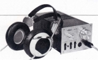
SR-3 SR-3（その2）＊＊SR-3（その2）は、管理人所有ではなく「美緒」さんの提供によるものです。SR-3発売当初のもので管理人所有の取扱説明書より古い資料です。一部欠損があり、やや不鮮明な部分もありますが、SRA-8Sの回路図が掲載されるなど、貴重な資料です。
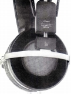
SR-X 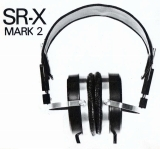
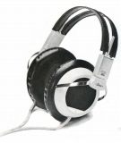
SR-5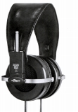
SR-Xmk3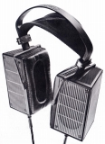
SR-Σ（シグマ）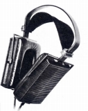
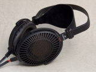
SR-Γ（ガンマ） （「蒼乃雑記」蒼乃さんの提供）(注 SR-Γ（ガンマ）はSR-α（アルファ）PROの兄弟モデルで、輸出専用モデルです。）
・エレクトレット型のイヤスピーカー（ヘッドフォン）
バイアス電圧不要のエレクトレット型製品
・プロバイアスのイヤスピーカー（ヘッドフォン）
1980年代以降〜現行の580Vバイアスの製品
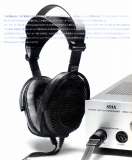
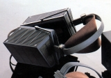
SR-Σ/Σ(シグマ）Professional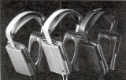
Lambda Novaシリーズ （「蒼乃雑記」蒼乃さんの提供）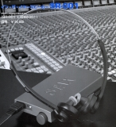
SR-001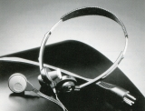
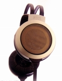
SR-007 SR-404Signature/303Classic/202Basic
SR-404Signature/303Classic/202Basic
2.ドライバーユニット・アダプター
�@ドライバーユニット
一般的なヘッドフォン・アンプに相当する製品。
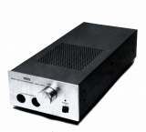
SRM-1/MK-2(PRO)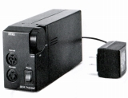
SRD-X Professional（注 昇圧過程でトランスを使用するため「SRD」型番がついていますが、用途がラインレベル接続なので、ドライバーユニットに分類しております。）
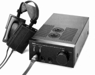
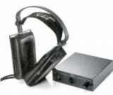
SRM-Xh (�泣Xタックス様から提供）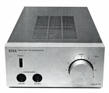
SRM-717�Aアダプター
1980年代初頭までの、コンデンサー型ヘッドフォンの標準的なドライブ手段。通常のアンプのスピーカー端子に接続。
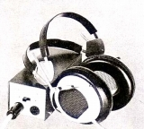
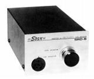
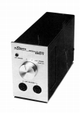
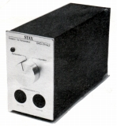
�B（コンデンサーヘッドフォン用）プリメインアンプ
一般でいうプリアンプにコンデンサー型ヘッドフォン用のドライバーを内蔵したもの。
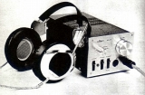
SRA-3S
3.その他の製品
�@アナログディスク関連
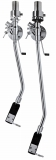